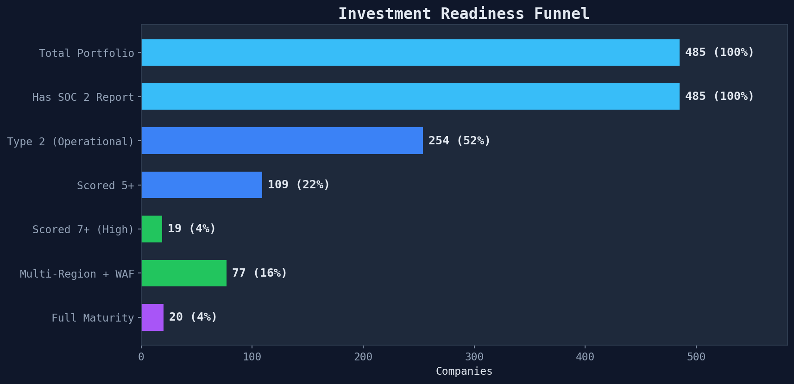
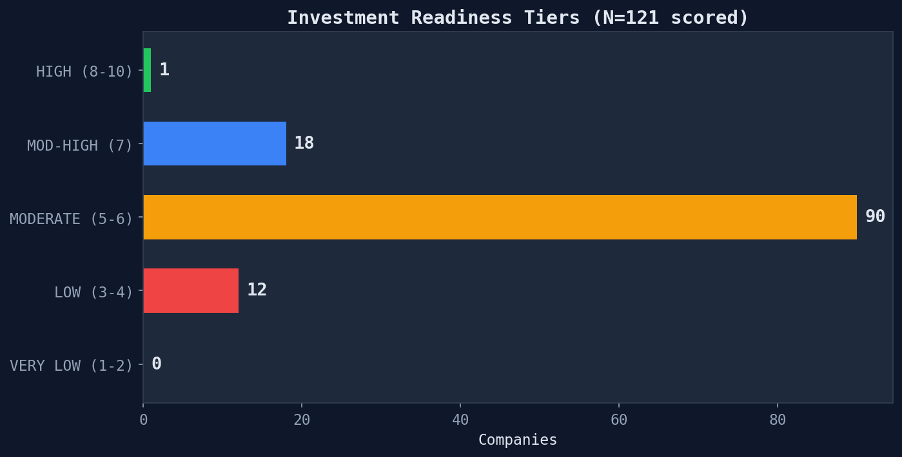
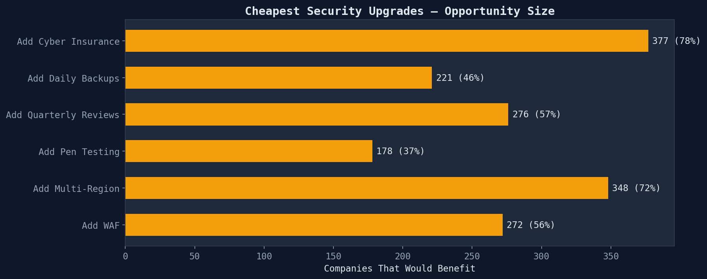

From 485 companies to the investable few — the quality funnel
Starting from 485 companies, each progressive quality filter narrows the pool dramatically.

| Stage | Remaining | Drop-off | What it means |
|---|---|---|---|
| Total Portfolio | 485 | — | All companies with SOC 2 reports |
| Type 2 (Operational) | 254 | 231 lack operational evidence | Controls tested over time, not just designed |
| Scored 5+ | 109 | 145 below baseline | Minimum acceptable tech maturity |
| Scored 7+ | 19 | 90 adequate but not exceptional | Strong tech foundations |
| Full Maturity | 20 | -1 missing resilience | Multi-region + WAF + pen test + backups + reviews |

Of 121 scored companies:
These interventions would move the most companies up the maturity ladder with the least effort:

Generated from investment readiness module · 485 SOC 2 compliance reports · 2026-03-24